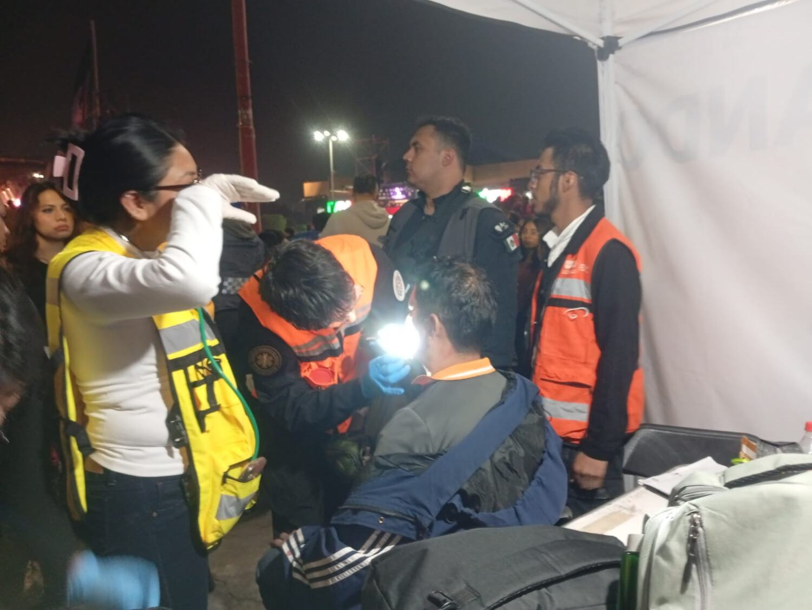
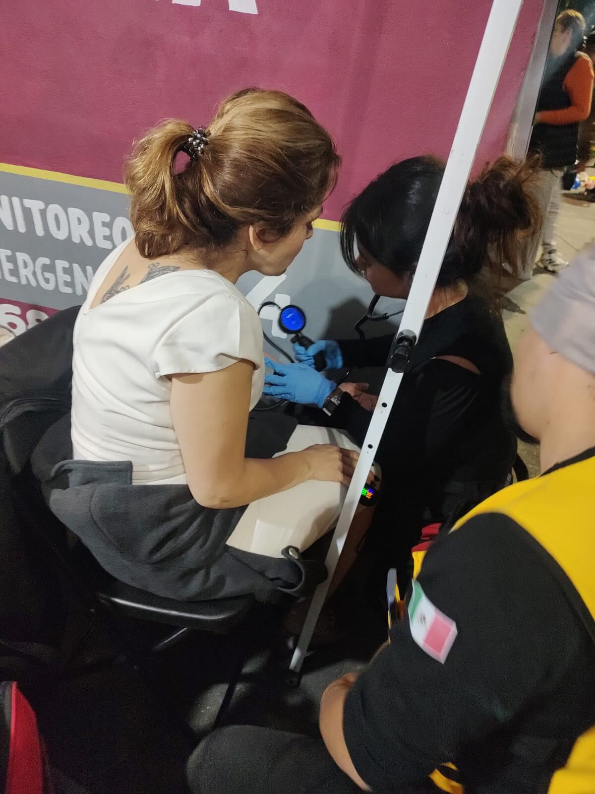
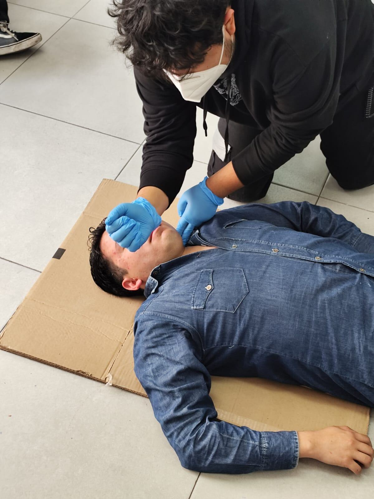
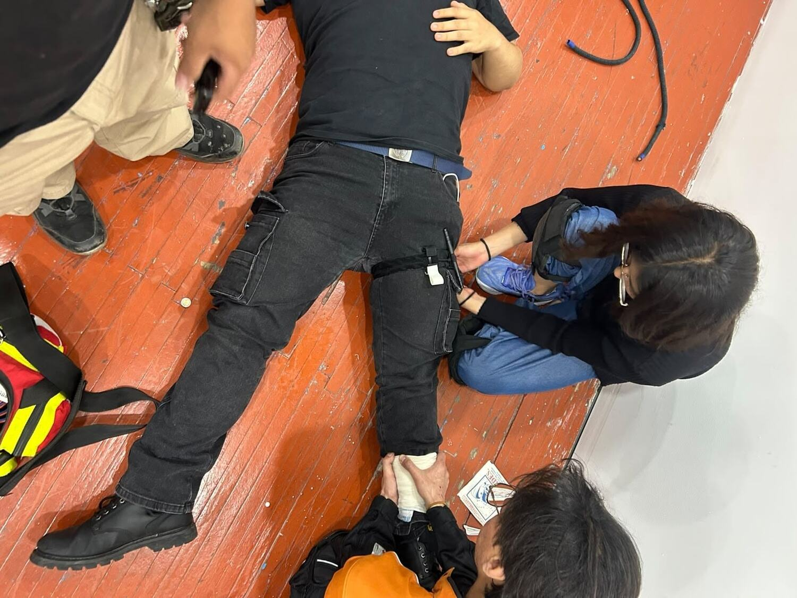
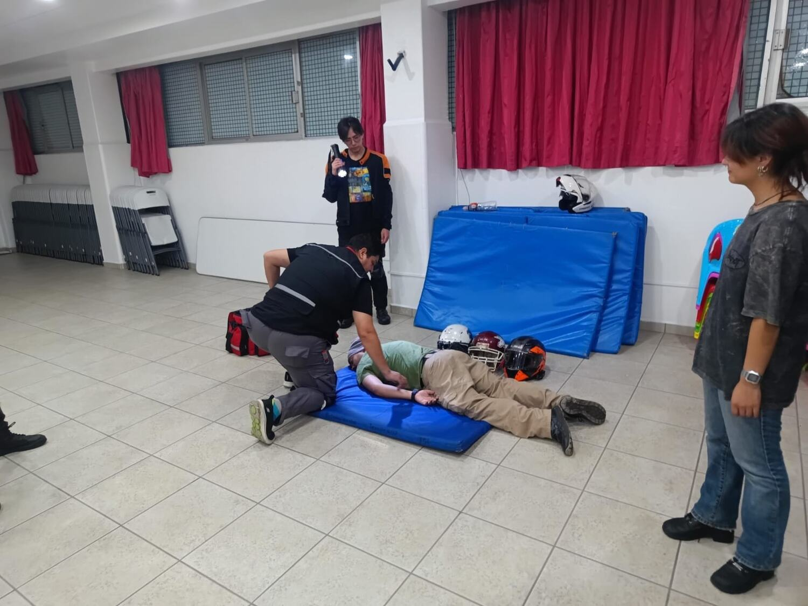
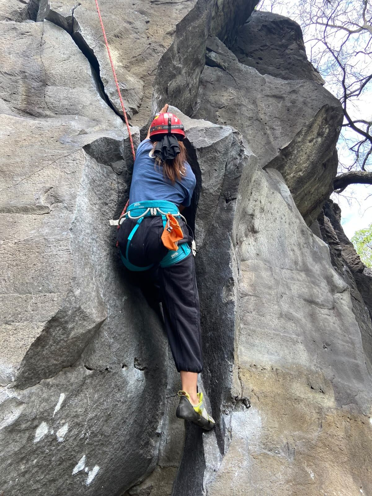
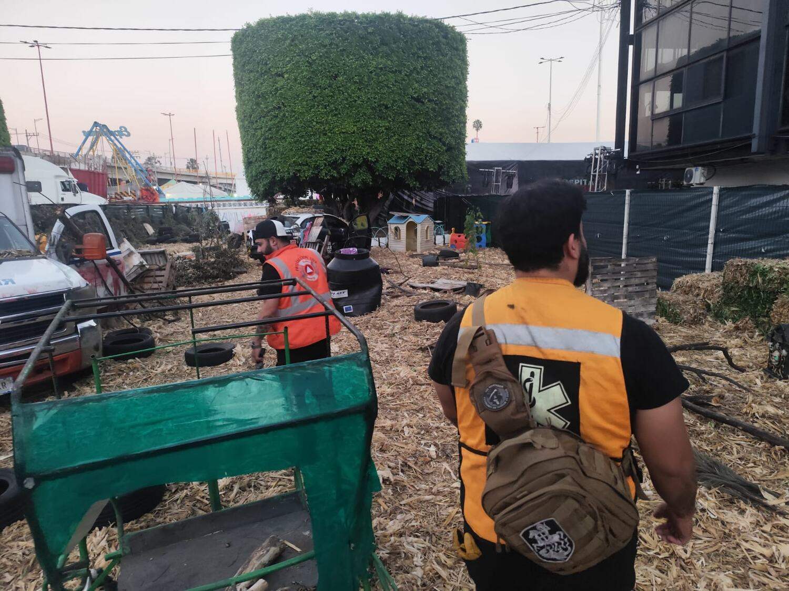

Antes del hospital
La atención prehospitalaria es la que recibe una persona en el lugar de la emergencia, antes de llegar a un hospital. Ahí trabajamos.
Iniciando protocolo ámbar
0%
Protocolo Ámbar · Ciudad de México
Somos Cruz Ámbar: voluntarios que atienden gratuitamente a la ciudadanía en atención prehospitalaria. Sin fines de lucro, con la técnica de quien se prepara para el peor momento de alguien más.
01 · Quiénes somos
Somos voluntarios. Somos una asociación civil sin fines de lucro. Atendemos gratuitamente a la ciudadanía en atención prehospitalaria, porque cuando alguien se cae, se lastima o se desvanece, la primera ayuda no debería depender de cuánto pueda pagar.
La atención prehospitalaria es la que recibe una persona en el lugar de la emergencia, antes de llegar a un hospital. Ahí trabajamos.
Eventos, calles, comunidades y aulas: nos preparamos para ayudar donde la ciudad nos necesite.
Nadie cobra por atenderte y nadie te cobra por ser atendido. Lo hacemos porque creemos en ayudar.
02 · Qué hacemos
Cada una la entrenamos, la repetimos y la compartimos. Porque en una emergencia no hay tiempo de improvisar.
Valoramos, estabilizamos y acompañamos a quien se lastima o se siente mal en la calle, en un evento o en su comunidad. Sin costo y sin letras chicas.

Presión arterial, temperatura, oxigenación: medimos lo que importa para saber cómo está una persona y cuándo necesita más ayuda.

Practicamos reanimación y manejo de la vía aérea con maniquíes y compañeros, hasta que la técnica sea memoria muscular.

Torniquetes, vendajes compresivos y manejo del sangrado: los minutos cuentan y las manos tienen que saber qué hacer.

Protegemos la columna y movemos a una persona lesionada con técnica, incluso cuando trae el casco puesto.

Cuerdas, terreno y trabajo en equipo: salimos del aula para entrenar donde las cosas pasan de verdad.

¿Y si la próxima vez que alguien lo necesite, fueras tú quien sabe qué hacer?
Quiero aprender primeros auxilios03 · Nuestro compromiso
$0
Lo que cuesta ser atendido por Cruz Ámbar.
Atención prehospitalaria gratuita para la ciudadanía.
Atendemos gratuitamente a la ciudadanía. Nadie tiene que pagar para recibir ayuda.
Quienes te atienden lo hacen por vocación, dedicando su tiempo a servir.
Somos asociación civil: no buscamos ganancia, solo propósito.
Simulacros, maniquíes y práctica en campo: nos preparamos antes de que nos necesiten.
04 · Aprende con nosotros
Proteger, Avisar, Socorrer. Es el orden en que actúa cualquier persona preparada. Así lo practicamos.
Antes de ayudar, mira alrededor. Si la escena no es segura para ti, tampoco lo será para nadie más. Aléjate del peligro y protege a la persona.
Llama al 911 y da datos claros: dónde estás, qué pasó y cuántas personas necesitan ayuda. Sigue las indicaciones del operador.
Ayuda con lo que sabes, no con lo que imaginas. Por eso practicamos tanto: para que, llegado el momento, tus manos sepan qué hacer.
Aprender toma unas horas. Saber qué hacer puede cambiar una vida.

05 · En campo
Calles, eventos masivos, aulas y terreno abierto: así se ve el trabajo de nuestros voluntarios cuando salen a servir.
Quiero ver el trabajo de cerca06 · Bitácora de campo
Entrenamientos, simulacros y puestos de atención. Toca cualquier foto para verla en grande.
07 · Nuestra identidad
Color de alerta, de calor y de luz que se ve de lejos. Es la señal que nos identifica: Brigada Rama Auxilio y Apoyo A.C., Cruz Ámbar, México CDMX.
Pone a la Ciudad de México en el centro: el Ángel, Bellas Artes, el Metro y el mapa del país rodean una cruz. Brigada de Apoyo y Auxilio.
08 · Súmate
No importa si hoy no sabes nada de primeros auxilios. Importa que quieras estar listo para cuando alguien lo necesite.
09 · Preguntas frecuentes
¿Te quedó otra duda? Cuéntanosla y la resolvemos sin compromiso.
Quiero resolver mi dudaNo. Cruz Ámbar es una asociación civil sin fines de lucro y atiende de manera gratuita a la ciudadanía en atención prehospitalaria.
Somos voluntarios de la Ciudad de México que nos capacitamos y entrenamos para ayudar a quien lo necesita.
Es la atención inmediata que recibe una persona lesionada o enferma en el lugar donde ocurre la emergencia, antes de llegar a un hospital.
Llama primero al 911. Si puedes hacerlo con seguridad, protege a la persona, da datos claros al operador y sigue sus indicaciones hasta que llegue la ayuda.
Usa la sección de contacto al final de esta página: cuéntanos qué te interesa y te responderemos.
10 · Contacto
Cuéntanos qué te trae por aquí. Sin costo y sin compromiso: solo una conversación para encontrar tu siguiente paso.
¿Es una emergencia? No esperes: llama al 911.
Muy pronto podrás escribirnos desde aquí. Mientras tanto, comparte esta página con alguien que quiera sumarse o capacitarse: cada persona que sabe qué hacer cuenta.